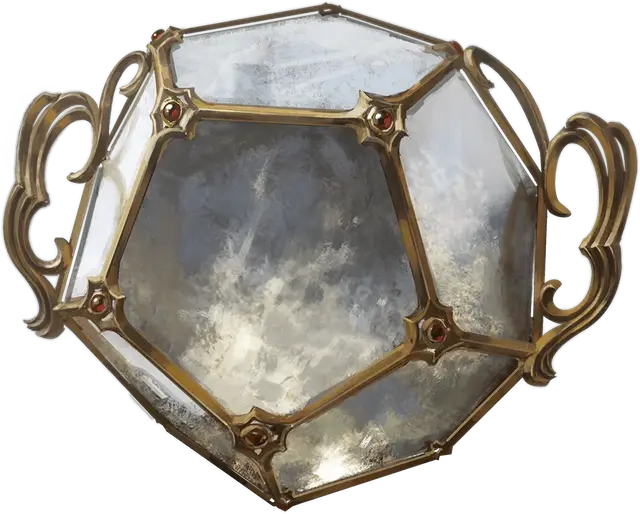

Маяк Люксона
Luxon Beacon
Чудесный предмет, легендарный

Рекомендованная стоимость от 50 001 зм
Этот додекаэдр из слабо светящегося кристалла тяжелее, чем кажется. К его бокам прикреплены ручки и он начинает пульсировать и гудеть, когда к нему прикасаются.
Частица возможностей. Существо, которое касается маяка и концентрируется на нём в течение 1 минуты, получает Частицу возможностей, которая выглядит как Крошечный сероватый шарик энергии, который парит вокруг существа, оставаясь в пределах 1 фута от него все время. Частица существует в течение 8 часов или до тех пор, пока не будет использована. Как только маяк предоставляет Частицу возможностей, он не может предоставить другую до следующего рассвета. Существо с Частицей возможностей от Маяка Люксона не может получить другую Частицу возможностей из любого другого источника.
Когда существо с частицей возможности совершает бросок атаки, проверку характеристики или спасбросок, оно может потратить свою частицу, чтобы бросить дополнительный к20 и выбрать, какой из к20 использовать. В качестве альтернативы, когда бросок атаки совершается против существа, оно может использовать свою частицу, чтобы бросить к20 и выбрать, какой из к20 использовать, тот, который оно бросило, или тот, который бросил нападающий.
Если первоначальный бросок к20 имеет преимущество или помеху, то существо бросает свой к20 после того, как преимущество или помеха были применены к исходному броску.
Ловец душ. Если последователь Люксона, прошедший ритуал посвящения, умирает в радиусе 100 миль от маяка Люксона, его душа попадает в маяк. Эта душа будет реинкарнирована в теле случайного гуманоидного ребенка, рождающегося в радиусе 100 миль от маяка.